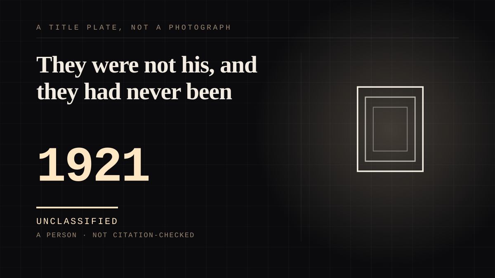

A person · 1921 · Silent era
They were not his, and they had never been
A screen persona called the Latin Lover, and a death at thirty-one that produced public mourning on a scale nothing before it had managed - including a woman claiming an engagement he had never mentioned to anyone.

The template for every celebrity death since, and the first case where the bereavement was demonstrably about the relationship rather than the work. Valentino - "the first Latin Lover and the Great Lover" - broke through in The Four Horsemen of the Apocalypse (1921), which did not merely star him: it "popularized the Argentine tango dance with American audiences", so the figure and a dance step arrived together. He set up the Rudolph Valentino Medal in 1925, a precursor to the Academy Award, which is worth noting for a different reason - the man was by then an institution capable of handing out prestige. What matters is 23 August 1926. He died at thirty-one of "complications of peritonitis following surgery for appendicitis and gastric ulcers", and Wikipedia's own summary of the consequence is flat and enormous: it "triggered mass public mourning, cementing his status as a legendary figure of early cinema". A death produced a national grief, and the industry read that grief as an asset within days. But the detail that makes this entry is a smaller one and it is the site's whole subject in a single sentence. At the funeral Pola Negri "made a scene at his funeral, claiming they were engaged, in spite of the fact that Valentino himself had never mentioned this engagement to anyone." A woman invented a relationship with a dead man because the public bond demanded one, and the invention was more faithful to the audience's picture of him than anything he had done. That is the gap this site is about, and in 1926 it produced a scene at a funeral. On the otherness axis he is deliberately left unplaced: a real person is not any of its six members, which turns out to be the clearest argument for the fourth axis. What he is on the reciprocity axis is directed - the audience attached, and he never had to notice.
Where it sits
1900 1900-1949 · 1921 1949
Provenance · 1 source record(s)
- retrievableDates, the persona and the mourning: 'Rodolfo Pietro Filiberto Raffaele Guglielmi di Valentina d'Antonguolla (May 6, 1895 - August 23, 1926)... Dubbed the Latin Lover, he became one of the most iconic stars of American silent cinema... Rising to international fame in the early 1920s, Valentino was celebrated for his exotic screen persona, romantic intensity, and expressive performances, which helped redefine male stardom during the silent era. Often referred to as the first Latin Lover and the Great Lover, Valentino began his career as a taxi dancer... before he achieved breakthrough success with the film The Four Horsemen of the Apocalypse (1921), which popularized the Argentine tango dance with American audiences.' And: 'In 1925, he established a film award recognizing artistic achievement, the Rudolph Valentino Medal, which was a precursor to the Academy Award. His sudden death in 1926 at the age of 31 from complications of peritonitis following surgery for appendicitis and gastric ulcers triggered mass public mourning, cementing his status as a legendary figure of early cinema.' And the invention: 'Upon his death, Negri made a scene at his funeral, claiming they were engaged, in spite of the fact that Valentino himself had never mentioned this engagement to anyone.'Rudolph Valentino. Wikipedia. ↗
Connected · 3 out, 4 in
Reported as a story
It sits in